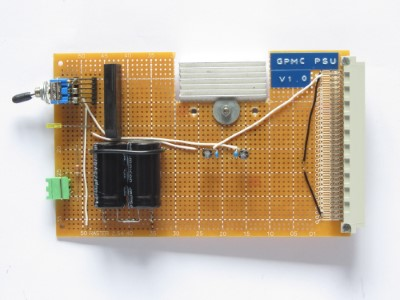
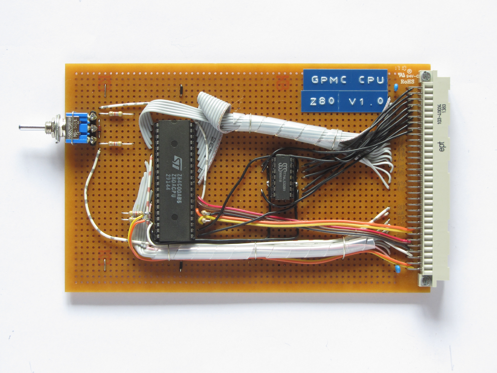
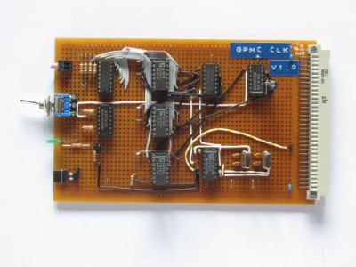
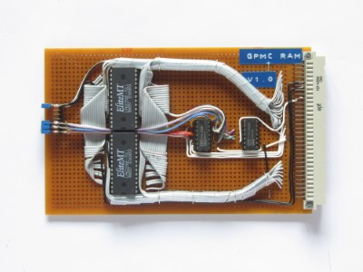
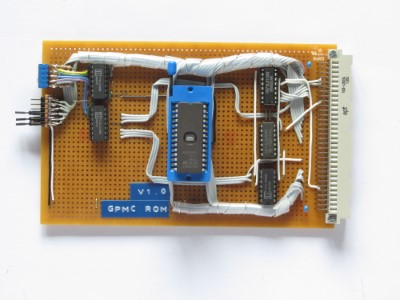
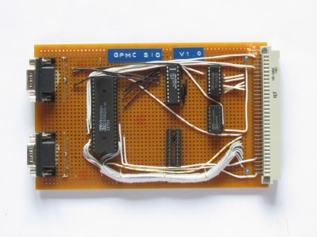
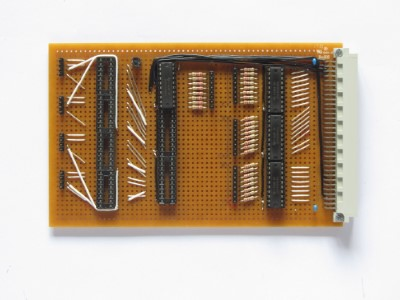

I ever wanted to build my own Computer, but I thought I would never be able to do that. After Ive seen the "RC2014" Computer, I realized that its not that complicated and decided to recreate this Computer. The "Cactus" Computer(using a 6502 CPU and a nice looking Frontpanel) heavily inspired this Computer, especially the Front Panel. Sadly my Computer inst in a working condition right now, and still heavily work in progress.
I decided to use a 19" Subrack and eurocards for it, with a 64-Pin Connector on the back.

This table shows all the cards in the current(or outdated) state:
| Name | Version | Description | Specs | Picture |
|---|---|---|---|---|
| PSU | 1.0 | Power Supply Unit | Input: ~+7-25V Output: +5V Current: ~1,5A |
 |
| CPU | 1.0 | Central Processing Unit | Z80 CPU |  |
| CLK | 1.0 | Clock Generator | 10 different clock speeds Manual, ~10Hz, 0,1536-7,3728MHz LED clock signal indicator |
 |
| RAM | 1.0 | Random Access Memory | 56k (64k paged) |  |
| ROM | 1.0 | Read Only Memory | accepts 2716 to 27512 can be paged in and out |
 |
| SIO | 1.0 | Serial Input Output Under construction! |
CTS/RTS Handshake two RS-232 ports |
 |
| FPL | 1.0 | Front Panel Logic Under construction! |
displays current bus status allows examine and deposit up and down |
 |
{kind=link}
{kind=link}
{kind=link}
{kind=link}
{kind=link}
{kind=link}
{kind=link}